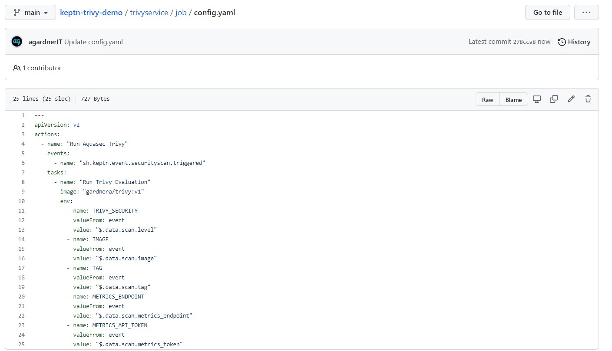

Security Quality Gates with Aquasec Trivy and Keptn
Building an automated security quality gate with Aquasec Trivy and Keptn...
Prerequisites
To follow along you'll need:
- Docker (optional)
- A Dynatrace account (15 day free trial here)
- A Kubernetes cluster
- Helm
Outcomes
Problem Statement: - I want to build security into my release pipeline - I want to do so in a flexible way that affords me the ability to switch out my tooling later - I want the flexibility to use any monitoring backend of my choosing
Evaluating a Container Image
I will use Aquasec Trivy to scan a container image for vulnerabilities.
This container image will also (optionally) post metrics (vulnerability counts) to a backend. In this case, Dynatrace, whenever the METRICS_ENDPOINT and METRICS_API_TOKEN are set.
Try it now in standalone mode (without pushing metrics to a backend):
$ docker run --rm -e TRIVY_SECURITY=CRITICAL -e IMAGE=nginx -e TAG=1.21.1 gardnera/trivy:v1
Congratulations, Trivy has identified 8 CRITICAL vulnerabilities in nginx:1.21.1.
METRICS_ENDPOINT and/or METRICS_API_TOKEN environment variables not set. Tool will still work but metrics will not be pushed to a backend.
Checking 1 security levels: ['CRITICAL']
Finished. Total Vulnerability Count: 8
Emit Metrics to a Backend
The container contains logic to be compatible with Dynatrace as a backend. Just add two environment variables and metrics will be pushed to Dynatrace.
Dynatrace stores metrics using a unique metric key and the container writes metrics with the following key format: trivy.vulnerabilities.SEVERITY split by image and tag values.
For example, you'll receive a metric called trivy.vulnerabilities.CRITICAL which you can then (optionally) split by image and / or tag values.
Generate a new Dynatrace API token (Settings > Integration > Dynatrace API) with ingest metrics and read metrics permissions.
Execute the image again, this time also specifying your backend details:
$ docker run --rm \
-e TRIVY_SECURITY=CRITICAL \
-e IMAGE=nginx \
-e TAG=1.21.1 \
-e METRICS_ENDPOINT=abc123.live.dynatrace.com \
-e METRICS_API_TOKEN=dtc01.*** \
gardnera/trivy:v1
Explore data and chart the trivy.vulnerabilities.CRITICAL metric.
Create GitHub Repo
- Create an uninitialised Git repo. Do not even add a readme file.
- Create a Personal access token with
reposcope
Install Keptn
Execute kubectl get namespaces and you should see the default namespaces.
Download the keptn CLI and install Keptn to your cluster, exposing via a LoadBalancer:
$ curl -sL https://get.keptn.sh | bash
$ keptn install --endpoint-service-type=LoadBalancer
Set some environment variables to store the Keptn API URL and API token:
$ KEPTN_API_URL=http://$(kubectl get service/api-gateway-nginx -n keptn -o=jsonpath='{.status.loadBalancer.ingress[0].ip}')/api
$ KEPTN_API_TOKEN=$(kubectl get secret keptn-api-token -n keptn -ojsonpath='{.data.keptn-api-token}' | base64 --decode)
Use these details to authenticate the keptn CLI and check the status of keptn to get your bridge URL:
$ keptn auth --endpoint=$KEPTN_API_URL --api-token=$(kubectl get secret keptn-api-token -n keptn -ojsonpath={.data.keptn-api-token} | base64 --decode)
$ keptn status
Store the Keptn's bridge username and password in environment variables and log into to the bridge via your browser:
$ KEPTN_BRIDGE_USERNAME=$(kubectl get secret -n keptn bridge-credentials -o jsonpath="{.data.BASIC_AUTH_USERNAME}" | base64 --decode)
$ KEPTN_BRIDGE_PASSWORD=$(kubectl get secret -n keptn bridge-credentials -o jsonpath="{.data.BASIC_AUTH_PASSWORD}" | base64 --decode)
Set two final environment variables to hold your Dynatrace tenant details:
$ DT_TENANT=abc123.live.dynatrace.com
$ DT_API_TOKEN=dtc01.***
Create Dynatrace Secret in Keptn
Create a secret using hte keptn create secret command. Thsi will be used later to interact and authenticate with Dynatrace during hte quality gate execution:
$ keptn create secret dynatrace-api-token \
--from-literal="DT_TENANT=$DT_TENANT" \
--from-literal="DT_API_TOKEN=$DT_API_TOKEN" \
--from-literal="KEPTN_API_URL=$KEPTN_API_URL" \
--from-literal="KEPTN_API_TOKEN=$KEPTN_API_TOKEN"
Recap So Far
So far, you have: 1. Executed a docker container which uses Aquasecurity Trivy to identify vulnerabilities in a container image. 1. Executed the same container providing a metrics backend which pushed data into Dynatrace 1. Charted that metric in Dynatrace 1. Installed Keptn onto your cluster
Keptn & Dynatrace
So far, Keptn is installed with the core services. Keptn interacts with other tools and services via additinoal microservices.
We want to give Keptn the ability to interact with Dynatrace, so let's install the Dynatrace service:
$ DT_SERVICE_VERSION=0.16.0
$ helm upgrade --install dynatrace-service -n keptn https://github.com/keptn-contrib/dynatrace-service/releases/download/$DT_SERVICE_VERSION/dynatrace-service-$DT_SERVICE_VERSION.tgz
Keptn Executes Arbitrary Containers / Jobs
We also need to give Keptn a way to execute our gardnera/trivy:v1 container in response to a cloudevent. For that, we'll install the Job Executor Service:
$ git clone https://github.com/keptn-sandbox/job-executor-service
There is a typo in the service.yaml file so fix that quickly and install the service:
$ sed -i 's/value: false/value: "false"/g' ~/job-executor-service/deploy/service.yaml
$ kubectl apply -f ~/job-executor-service/deploy/service.yaml
Verify Installation
Execute kubectl get pods -n keptn and you should see:
NAME READY STATUS
api-gateway-nginx 1/1 Running
api-service 2/2 Running
approval-service 2/2 Running
bridge 1/1 Running
configuration-service 1/1 Running
dynatrace-service 2/2 Running
job-executor-service 2/2 Running
keptn-nats-cluster-0 3/3 Running
lighthouse-service 2/2 Running
mongodb 1/1 Running
mongodb-datastore 2/2 Running
remediation-servic 2/2 Running
secret-service 1/1 Running
shipyard-controller 2/2 Running
statistics-service 2/2 Running
Create Keptn Project
Create a new file called shipyard.yaml.
Everything Keptn does is backed by a cloudevent and Keptn will generate and distribute cloudevents on our behalf.
For example, we will send an sh.keptn.event.main.demosequence.triggered event and keptn will automatically trigger the tasks in that workflow. The tooling is then responsible for listening for those task events and performing an action.
In our case, we'll tell the trivy container to listen for sh.keptn.event.securityscan.triggered and when it hears that event, the trivy container will run.
---
apiVersion: spec.keptn.sh/0.2.0
kind: Shipyard
metadata:
name: myshipyard
spec:
stages:
- name: main
sequences:
- name: demosequence
tasks:
- name: securityscan
- name: evaluation
Create Keptn Project
Set your Git details as environment variables and create the Keptn project:
$ GIT_USER=YOURUSERNAME
$ GIT_REPO=https://github.com/YOU/YOUR-REPO
$ GIT_TOKEN=***
$ keptn create project trivyintegration \
--shipyard=shipyard.yaml \
--git-user=$GIT_USER \
--git-remote-url=$GIT_REPO \
--git-token=$GIT_TOKEN
Next, create a new keptn service inside the trivyintegration project to hold our evaluations:
$ keptn create service trivyservice --project=trivyintegration
Use Dynatrace to Monitor Keptn Project
Tell Keptn that you wish to use Dynatrace with this keptn project:
$ keptn configure monitoring dynatrace --project=trivyintegration
You will receive the following warning. We have created and will use a secret called dynatrace-api-token (see keptn create secret command above) so you can safely ignore this warning:
failed to load Dynatrace credentials: key DT_TENANT was not found in secret "dynatrace"
Configure Job Executor
It is time to tell the job executor service:
- Which Keptn cloudevent it should listen for
- Which image to execute when that event is heard
This is done via a file created in the repo. Navigate to the main branch of your repo (this branch reflects the stage name in your shipyard file). Create a new folder called job inside the trivyservice folder.
Inside this folder, create a file called config.yaml:
---
apiVersion: v2
actions:
- name: "Run Aquasec Trivy"
events:
- name: "sh.keptn.event.securityscan.triggered"
tasks:
- name: "Run Trivy Evaluation"
image: "gardnera/trivy:v1"
env:
- name: TRIVY_SECURITY
valueFrom: event
value: "$.data.scan.level"
- name: IMAGE
valueFrom: event
value: "$.data.scan.image"
- name: TAG
valueFrom: event
value: "$.data.scan.tag"
- name: METRICS_ENDPOINT
valueFrom: event
value: "$.data.scan.metrics_endpoint"
- name: METRICS_API_TOKEN
valueFrom: event
value: "$.data.scan.metrics_token"
This file stipulates that the job executor service will listen for sh.keptn.event.securityscan.triggered events and run the gardnera/trivy:v1 image which setting some environment variables that will be pulled from the incoming cloudevent (we'll set these later).

Use dynatrace-api-token Secret
Tell Keptn to use a secret called dynatrace-api-token when interacting with Dynatrace. Recall that we created a token near the beginning of this article.
On the main branch, navigate back up to the trivyservice directory and create a new folder called dynatrace. Inside this folder, create a file called dynatrace.conf.yaml:
---
dtCreds: dynatrace-api-token
Provide Service Level Indicators and Objectives
Quality gates are an out-of-the-box feature of Keptn (if you're interested, they're implemented by the lighthouse-service). However, we still need to tell Keptn what metrics we care about (aka what our SLIs are).
Alongside the dynatrace.conf.yaml file, create a new file called sli.yaml:
---
indicators:
trivy_vulns: "metricSelector=trivy.vulnerabilities.CRITICAL"
Now tell Keptn what our Service Level Objectives should be. This is where we add a threshold to our metric.
Navigate back to the trivyservice directory and create a file called slo.yaml:
---
spec_version: "0.1.0"
filter: {}
comparison:
compare_with: single_result
include_result_with_score: pass
number_of_comparison_results: 1
aggregate_function: avg
objectives:
- sli: trivy_vulns
pass:
- criteria:
- "<10"
total_score:
pass: 90%
warning: 75%
This file tells Keptn to use the trivy_vulns SLI we defined in sli.yaml and that if the number of vulnerabilities is less than 10, the quality gate is a pass. If the critical vulnerability count is 10 or higher, the gate will fail.
Ask Keptn to Execute Sequence
It is time to ask Keptn to run your task sequence. Do this by POSTing a payload to Keptn.
This payload contains some important information, such as:
- The image to test (
mysql) - The image tag to test (
8.0.26) - The vulnerability level(s) that we care about (
CRITICAL) - The metrics backend URL (your Dynatrace tenant)
- The metrics backend API key (you generated this in Dynatrace)
- The timeframe of the quality gate evaluation (look
5 minutesback into the past and grab data) - The cloudevent type (the sequence we wnat to run and in which Keptn stage:
sh.keptn.event.main.demosequence.triggered)
curl -X POST $KEPTN_API_URL/v1/event \
-H "x-token: $KEPTN_API_TOKEN" \
-H "Content-Type: application/json" \
-d '{
"data": {
"project": "trivyintegration",
"service": "trivyservice",
"stage": "main",
"labels": {
"runBy": "agardner.net"
},
"scan": {
"level": "CRITICAL",
"image": "mysql",
"tag": "8.0.26",
"metrics_endpoint": "https://$DT_TENANT",
"metrics_token": "$DT_API_TOKEN"
},
"evaluation": {
"timeframe": "5m"
}
},
"source": "POSTMAN",
"specversion": "1.0",
"shkeptnspecversion": "0.2.3",
"contenttype": "application/json",
"type": "sh.keptn.event.main.demosequence.triggered"
}'

Summary
This post has shown how easy it is to have Keptn execute arbitrary sequences of tasks using any tooling. I hope this has given you some inspiration and food for thought.
Connect with me on LinkedIn and let me know how you use this.